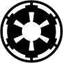

Darth Vader
Sith Lord
Galactic Empire
Death Star, Outer Rim
Destaques
- Construtor e comandante da Estrela da Morte
- Responsável pela Ordem 66
- Maior duelista de sabre de luz do Império
Sobre
Antigo Jedi, agora Lorde Sith. Comandante supremo das forças do Império Galáctico. Determinado, estratégico e implacável. "I find your lack of faith disturbing."
Atividade
- Compartilhou: "Nova Estrela da Morte em construção!"
- Comentou: "A Força é poderosa em minha família."
- Repostou: "Promoção de stormtroopers do mês."
Experiência

Sith Lord
Galactic Empire
Comandante supremo das forças do Império Galáctico. Responsável por estratégias militares, liderança de tropas e projetos de superarmas como a Estrela da Morte.
Jedi Knight
Jedi Order
Atuação como Cavaleiro Jedi, defesa da República Galáctica, missões diplomáticas e treinamento em habilidades da Força e sabre de luz.
Educação
- Jedi Temple, Coruscant
- Imperial Academy (honorário)
Habilidades
- Força (Force Choke, Telecinese, Precognição)
- Sabre de luz
- Liderança militar
- Engenharia de superarmas
Publicações
- "Como construir uma Estrela da Morte em 10 passos"
- "Gestão de equipes imperiais: lições do lado sombrio"
Honras e Prêmios
- Medalha Imperial de Excelência
- Reconhecimento Supremo do Imperador
Idiomas
- Básico Galáctico
- Sith
- Twi'leki (compreensão)
Interesses
- Engenharia de superarmas
- Política galáctica
- Tradições Sith
- Corridas de pods